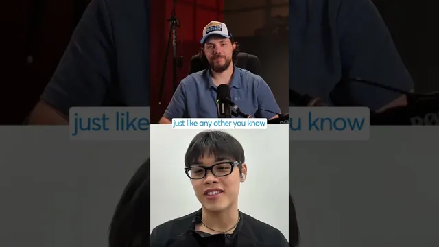

클로드 코드가 내 AI 스타트업을 죽였다

원본 영상 보기 →
- 매출이 늘고 있다는 사실이 해자를 증명하지 않아요
- 해지 사유는 가장 정직한 시장 신호예요
- 쉽게 복제되는 건 팔고, 복제 안 되는 건 남기세요
한 줄 요약
Voice AI SaaS를 2~3년 운영해 온 Eugene Kadzina가 "지금 구조로는 이 문제를 완전히 넘어설 길이 안 보인다"고 인정합니다. Claude Code 같은 코딩 도구 때문에 고객이 대시보드를 직접 만들어 버리거든요. 대시보드 판매에서 구현 대행 에이전시로 방향을 트는 이유를 짧게 밝힙니다.
전체 내용 정리
"지금의 SaaS 사업은 뚫을 길이 안 보여요"
진행자가 "본인 말로는 Claude Code가 스타트업을 죽이고 있다는데 웃고 있다, 망한 건가 피벗하는 건가"라고 묻습니다.
Eugene의 답은 이래요. 지난 2~3년 해온 SaaS 사업이 지금 상태로는 "바이브 코딩이라는 도전을 완전히 극복할 명확한 길이 안 보인다"고요. 그래서 Voice AI 구현 대행 서비스를 하는 자기 에이전시를 시작했습니다.
Claude Code가 그의 챗봇 제품의 모든 기능을 며칠 만에 복제할 수 있다는 뜻은 아니에요. 다만 기술만 있으면 며칠 안에 작동하는 대시보드 버전을 스스로 만들 수 있고, 그런 사례를 여러 번 봤다고 말합니다.
이탈 사유의 40%가 "직접 만들고 있다"
그의 SaaS에도 다른 제품처럼 해지 시 사유를 묻는 흐름이 있어요.
마지막으로 확인했을 때 이탈 사유의 40% 이상이 "이걸 사내에서 직접 만들고 있다"였습니다.
게다가 그가 겨냥하는 Voice AI 에이전시의 시장은 기술적이고 젊고 에너지 넘치는 사람들, 대부분 첫 사업을 시작하려는 허슬러들이라 늘 더 싼 대안을 찾아요. 이 고객층 특성이 문제를 키웁니다.
"예상은 했지만 너무 낙관적이었어요"
진행자가 "고객 기반을 키우며 성장하던 때, 1~2년 안에 큰 랩들이 사업을 완전히 무너뜨릴 무언가를 내놓을 가능성을 생각해 봤나"라고 묻습니다.
Eugene은 "완전히 무너진 건 아직 아니다"라고 전제하면서도, 다가오는 걸 알아채긴 했다고 말해요. 다만 너무 낙관적이었습니다.
이유가 있어요. 당시 외부 지표가 다 좋았거든요. AI 모델이 계속 좋아지는데도 매출이 매달 늘고 있었고, 그래서 모델이 개선돼도 사람들이 남아 있을 거라고 믿었습니다. 솔직히 그 신호를 제대로 잡지 못했다고 인정해요.
핵심 인사이트
- 매출이 늘고 있다는 사실이 해자를 증명하지 않아요: Eugene은 모델이 좋아지는데도 매출이 매달 늘어서 안심했지만, 그 성장은 이탈을 가린 착시였습니다. 지표가 우상향일 때가 오히려 대체 위협을 점검할 시점이에요.
- 해지 사유는 가장 정직한 시장 신호예요: "직접 만들고 있다"가 이탈의 40%를 넘었다는 건, 제품의 핵심 가치가 코딩 도구로 며칠이면 재현된다는 뜻입니다. 정성적 이탈 사유를 정기적으로 읽어야 해요.
- 쉽게 복제되는 건 팔고, 복제 안 되는 건 남기세요: Eugene의 대응은 "코드로 금방 만들 수 있는 대시보드 판매"에서 "직접 붙어서 해주는 구현 대행"으로 옮기는 겁니다. 가치의 무게중심을 소프트웨어에서 실행과 관계로 이동시켰어요.
오늘 당장 해볼 것
- 우리 제품이나 서비스의 핵심 기능을, 요즘 코딩 도구를 쓸 줄 아는 사람이 며칠 안에 재현할 수 있는지 냉정하게 적어 보세요. 재현 가능하다면 재현이 어려운 부분(데이터, 관계, 현장 실행, 규제 대응)이 무엇인지 함께 적으시고요.
- 최근 6개월치 해지·이탈 사유를 모아 "직접 만든다 / 더 싼 대안 / 안 쓴다"로 분류해 보세요. "직접 만든다"의 비중이 눈에 띄면 제품 포지션을 재검토할 때입니다.
- 매출이 우상향인 지금, 분기에 한 번 "우리를 대체할 수 있는 도구나 서비스가 지난 3개월간 무엇이 나왔나"를 점검하는 자리를 캘린더에 고정하세요.